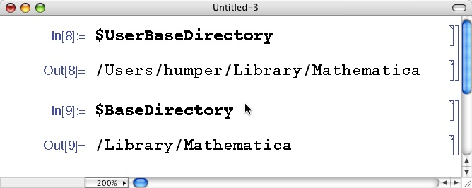

Mathematica To PBRT Convertor
by Greg Humphreys
Installation
Unzip the downloaded ZIP file. This should create a directory called "PBRT". If you’re looking at this README, you’ve already done that.
Place this directory in the " Applications " subdirectory of your Mathematica add-on location. If you're not sure where that is, fire up Mathematica and consult the $UserBaseDirectory variable, or the $BaseDirectory variable if you want the converter to be available to all users on your system (typically requires root or administrator access).
On my system, this looks like:

So I would place the package in the directory /Users/humper/Library/Mathematica/Applications/PBRT on my computer. That's it! Nothing to compile!
Demo
Below is a screen capure of the system in action.

The return value of PBRTExport tells you exactly where the file is located. We can just render it!

Since we called the file cool.pbrt , the output is placed in cool.exr .

What can it do?
This converter supports:
-
Export of any Graphics3D object as polygons.
-
Export of the result of Plot3D or ParametricPlot3D as a mesh with texture coordinates and optional analytic vertex normals.
-
Warping of the generated texture coordinates by an arbitrary function.
-
Scaling of the output of Plot3D to give the desired aspect ratio.
-
Export to a ready-to-render scene that matches Mathematica’s viewpoint and lighting parameters.
-
Export of geometry only, ready to be included in a larger PBRT scene.
-
Specification of output file width, height, and filename.
-
Creation of a unique temporary output file, if the user does not specify where the generated PBRT code should go.
Setting options
The ExportPBRT function supports five options. They are passed in the standard way. For example, to specify a larger output image size, you would just use the command
ExportPBRT[“~/filename.pbrt”,graphicsObject,
EXRWidth->1024,EXRHeight->768]
|
Option |
Default |
Description |
|---|---|---|
|
EXRWidth |
512 |
The width of the output image, in pixels |
|
EXRHeight |
384 |
The height of the output image, in pixels |
|
EXRName |
Automatic |
The name of the output image. If no name is specified, the EXR file will have the same name as the PBRT file, with the extension .exr. If the converter can’t figure out how to do this conversion, it will fall back to mathematica.exr . |
|
GeometryOnly |
False |
If set to true, the generated file will only contain the geometry of the Mathematica object, not the necessary surrounding PBRT commands to make an image. This is useful if you want to include the geometry in some larger scene. In this case, you can use the PBRT Include command to reference the generated file. |
|
VertexNormals |
True |
If True, the generated mesh will contain per-vertex normals for smooth shading. These normals are computed using the derivatives of the supplied function. If the derivatives are not defined at all of the sample points, or if the function is not differentiable, a flat-shaded mesh will always be generated. |
|
TextureWarp |
None |
If provided, this function will be applied to the generated texture coordinates before export. This function must take a pair of real-valued numbers {u,v}, and return another pair of real-valued numbers {f(u),g(v)}. This option has no effect if the object being exported does not have texture coordinates. |
Furthermore, the Plot3D command can accept a constant PlotScale parameter (default 3.5) which will multiply the function by that constant.